لیستها یکی از ۴ نوع داده در پایتون هستند که برای ذخیرۀ مجموعهای از دادهها در یک متغیر واحد استفاده میشوند، ۳ نوع دیگر Set، Tuple و Dictionary هستند که هر کدام کاربردهای متفاوتی دارند.
ایجاد لیست: لیستها با استفاده از کروشهها (Square brackets)"[]" ایجاد میشوند.
در کد مقابل یک لیست شامل رشتهای از نام میوهها ایجاد شده است fruits = ["apple", "banana", "cherry"] . دستور مقابل یک لیست شامل اعداد 1 و 2 و 3 و 4 و 5 را ذخیره میکند. numbers = [1, 2, 3, 4, 5]
ویژگیهای لیست: Mixed data لیست انواع مختلف داده را میتواند نگهداری کند. در کد زیر یک لیست که انواع داده متفاوت عددی، رشتهای، بولین و اعشاری و حتی لیست دیگر را در خود ذخیره میکند، ایجاد شده است (شکل35).
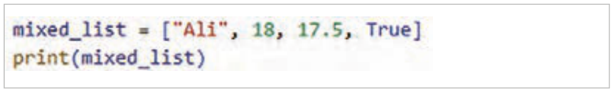
شکل ۳۵
Indexed: عناصر لیست دارای ایندکس (Index) هستند؛ یعنی هر عنصر یک شماره دارد و اولین عنصر لیست دارای اندیس صفر است (شکل36).
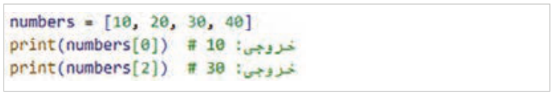
شکل ۳۶
صفحه ۱۷
با ایندکس میتوان به عناصر لیست دسترسی داشت (شکل37).
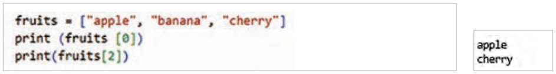
شکل ۳۷
Mutable: لیست قابلیت تغییر دارد؛ یعنی بعد از ایجاد لیست، میتوان عناصر آن را ویرایش، حذف یا اضافه کرد. در این مثال عنصر دوم لیست که اندیس آن[1] و مقدارش "banana" است به "oranges" تغییر داده شده است.
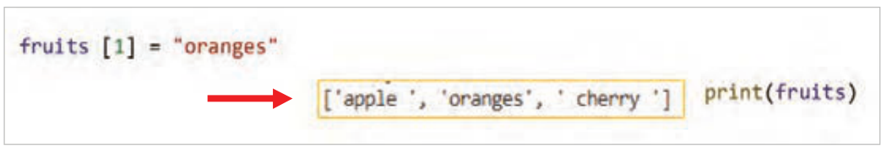
شکل ۳۸
Ordered: لیستها دارای ترتیب مشخص هستند: عناصر لیست به همان ترتیبی که وارد میشوند، ذخیره میگردند و این ترتیب تغییر نمیکند، مگر برنامهنویس آن را تغییر دهد.
عوامل مؤثر در ویژگی Ordered
الف ـ حفظ ترتیب ورود عناصر: همانطور که در مثال مشاهده میکنید عناصر دقیقاً به همان ترتیبی که وارد شدهاند، نمایش داده میشوند (شکل 39).
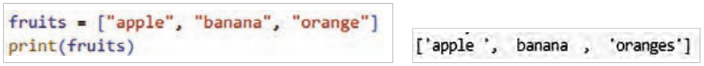
شکل ۳۹
ب ـ تأثیر ترتیب در نمایش عناصر لیست: اگر ترتیب تغییر کند، ایندکسها هم تغییر میکنند (شکل40).
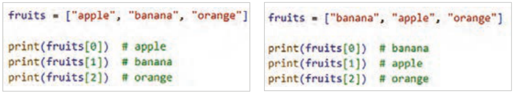
شکل ۴۰
صفحه ۱۸
ج ـ تغییر ترتیب عناصر: در این مثال فقط عنصر اول تغییر کرد، بقیه سر جای خود ماندند ← یعنی ترتیب مشخص است (شکل41).
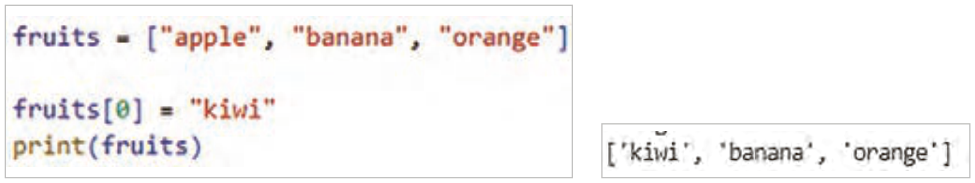
شکل ۴۱
د ـ مقایسه دو لیست با ترتیب متفاوت: در این مثال با اینکه عناصر یکی هستند، چون ترتیب متفاوت است، دو لیست برابر نیستند (شکل42).
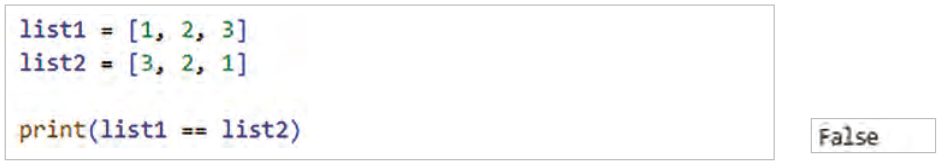
شکل ۴۲
افزودن عنصر جدید به لیست: با استفاده از متد append() میتوانید عنصر جدیدی را به انتهای لیست اضافه کنید (شکل 43).
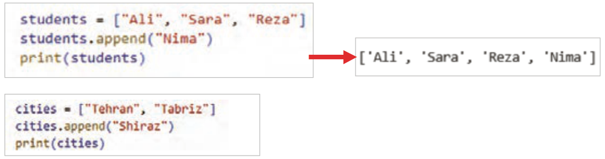
شکل ۴۳
صفحه ۱۹
در پایتون برای افزودن یک عنصر بعد از یک عنصر مشخص در لیست، از متد insert() استفاده کنید. list_name. insert (index, value)
مثال: لیست وظایف زیر را در نظر بگیرید:
tasks = ["Study", "Exercise", "Sleep"]
وظیفه "Break" را بین "Exercise" و "Sleep" اضافه کنید. لیست را نمایش دهید (شکل44).
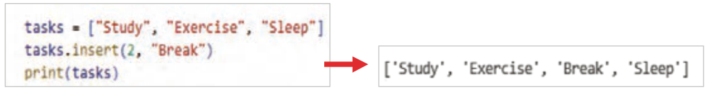
شکل ۴۴
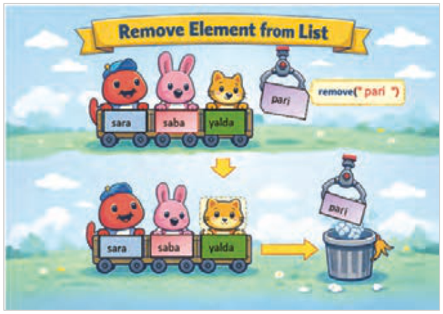
شکل ۴۵
حذف عنصر از لیست
در پایتون برای حذف عناصر از یک لیست (list) روشهای مختلفی وجود دارد. انتخاب روش مناسب به این بستگی دارد که بخواهیم بر اساس مقدار حذف کنیم یا بر اساس موقعیت (اندیس).
صفحه ۲۰
حذف عنصر با مقدار: متد remove() برای حذف مقدار یک عنصر از لیست است. اولین عنصری که همان مقدار را داشته باشد، حذف میشود.
list_name.remove(value)
مثال ۱: این برنامه با استفاده از متد remove() مقدار 12 را از لیست scores حذف کرده است (شکل46).
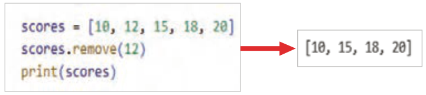
شکل ۴۶
مثال 2: این برنامه با استفاده از متد remove() مقدار اولین 20 را از لیست numbers حذف کرده است (شکل47).
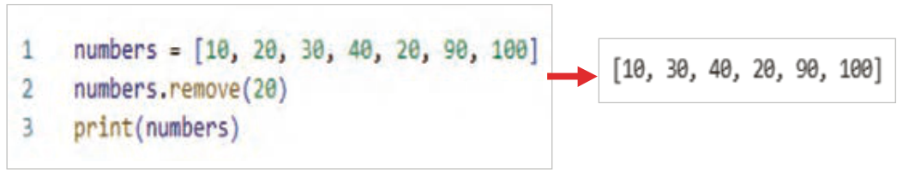
شکل ۴۷
حذف عنصر با ایندکس (index): متد pop() برای حذف عنصر با ایندکس مشخص شده استفاده میشود.
list_name.pop(index)
مثال: در این برنامه ایندکس با شماره یک، یعنی دومین عنصر لیست حذف شده است (شکل48).
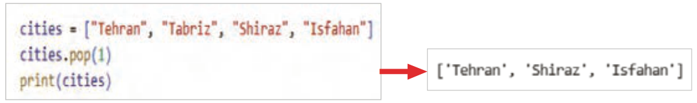
شکل ۴۸
صفحه ۲۱
اگر داخل متد pop() چیزی نوشته نشود، آخرین عنصر لیست حذف میشود. در کد زیر لیست food سه عنصر دارد (شکل49).
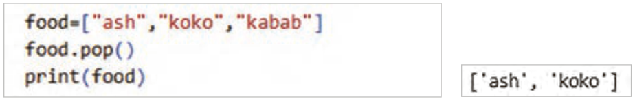
شکل ۴۹
در خط 2 متد pop() چیزی نوشته نشده است؛ پس آخرین عنصر لیست یعنی "kabab" حذف میشود. اجرای برنامه این موضوع را تأیید میکند.
ساختارهای شرطی
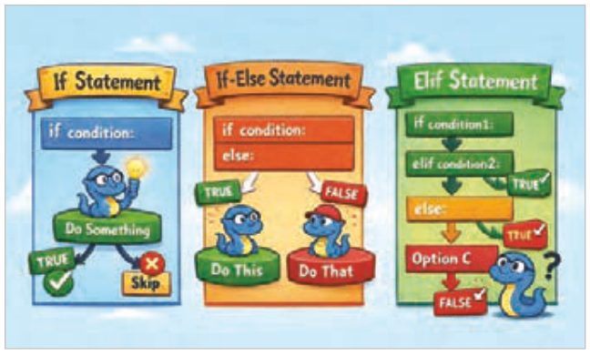
شکل ۵۰
ساختار شرطی به برنامه این امکان را میدهد که بر اساس برقرار بودن یا نبودن یک شرط، تصمیمگیری کند و مسیر اجرای دستورات را تغییر دهد. در این ساختار، ابتدا یک شرط بررسی میشود و سپس، در صورت درست بودن آن، مجموعهای از دستورات اجرا میگردد.
Page 16
List (list)
Figure 34
Lists are one of the 4 data types in Python that are used to store a collection of data in one single variable; the other 3 types are Set, Tuple and Dictionary, each with different uses.
Creating a list: lists are created with square brackets (Square brackets) "[]".
In the code opposite, a list consisting of a string of fruit names is created: fruits = ["apple", "banana", "cherry"] . The statement opposite stores a list containing the numbers 1, 2, 3, 4 and 5. numbers = [1, 2, 3, 4, 5]
Features of lists: Mixed data: a list can hold different kinds of data. The code below creates a list that stores different data types: numbers, strings, booleans, decimals, and even another list (Figure 35).
Figure 35
Indexed: list elements have an index (Index); that is, each element has a number, and the first element of the list has index zero (Figure 36).
Figure 36
Page 17
You can reach the elements of a list by their index (Figure 37).
Figure 37
Mutable: a list can be changed; that is, after a list is created, its elements can be edited, removed, or added. In this example, the second element of the list, whose index is [1] and whose value is "banana", is changed to "oranges".
Figure 38
Ordered: lists have a definite order: the elements are stored in the order they are added, and this order does not change unless the programmer changes it.
What the Ordered feature means
A. The order of entry is kept: as you can see in the example, the elements are shown in exactly the order they were entered (Figure 39).
Figure 39
B. Order affects how list elements are shown: if the order changes, the indexes change too (Figure 40).
Figure 40
Page 18
C. Changing the order of elements: in this example only the first element changed and the rest stayed in place ← so the order is fixed (Figure 41).
Figure 41
D. Comparing two lists with a different order: in this example the elements are the same, but because the order is different, the two lists are not equal (Figure 42).
Figure 42
Adding a new element to a list: with the append() method you can add a new element to the end of a list (Figure 43).
Figure 43
Page 19
In Python, to add an element after a given element of a list, use the insert() method. list_name. insert (index, value)
Example: consider the following task list:
tasks = ["Study", "Exercise", "Sleep"]
Add the task "Break" between "Exercise" and "Sleep". Show the list (Figure 44).
Figure 44Figure 45
Removing an element from a list
Python has several ways to remove elements from a list (list). Which one to use depends on whether you want to remove by value or by position (index).
Page 20
Removing an element by value: the remove() method removes a value from a list. The first element with that value is removed.
list_name.remove(value)
Example 1: this program uses the remove() method to remove the value 12 from the scores list (Figure 46).
Figure 46
Example 2: this program uses the remove() method to remove the first 20 from the numbers list (Figure 47).
Figure 47
Removing an element by index: the method pop() is used to remove the element with the given index.
list_name.pop(index)
Example: in this program the element at index one, that is, the second element of the list, is removed (Figure 48).
Figure 48
Page 21
If nothing is written inside the pop() method, the last element of the list is removed. In the code below, the food list has three elements (Figure 49).
Figure 49
On line 2 nothing is written inside the pop() method, so the last element of the list, "kabab", is removed. Running the program confirms this.
Conditional structures
Figure 50
A conditional structure lets a program make a decision based on whether a condition holds, and change which statements run. In this structure a condition is checked first, and then, if it is true, a set of statements runs.